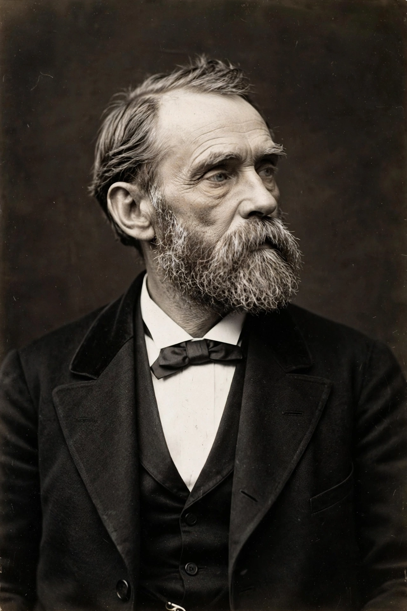

Alfred Bernhard Nobel (21 October 1833 – 10 December 1896) was a Swedish chemist, engineer, inventor and businessman best known for inventing dynamite and for bequeathing his fortune to establish the Nobel Prizes.

Son of inventor Immanuel Nobel, Alfred worked in the family armaments business, experimented with nitroglycerin, and in 1867 patented dynamite — nitroglycerin stabilised in diatomaceous earth. He built factories across Europe, held 355 patents, and founded companies that became part of modern explosives and chemicals industries.
Reportedly troubled by a premature obituary calling him a merchant of death, Nobel's 1895 will left most of his estate to fund annual prizes in Physics, Chemistry, Physiology or Medicine, Literature and Peace. The first prizes were awarded in 1901; the Economics prize was added later by Sweden's central bank.
The element nobelium is named for him, as are numerous schools, streets and the Nobel Prize ceremony held each 10 December in Stockholm and Oslo.